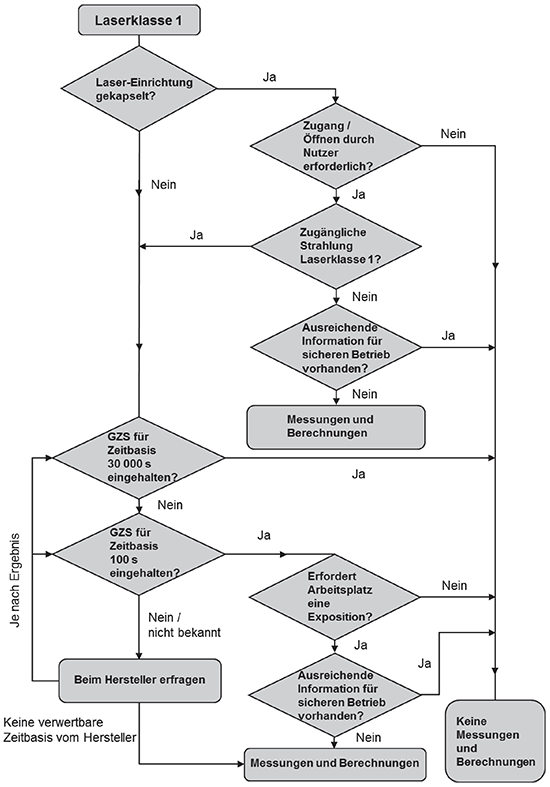
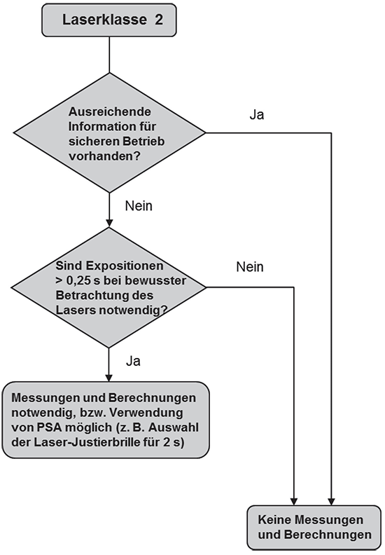
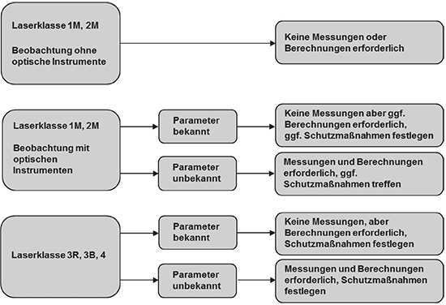

(1) Nach § 3 Arbeitsschutzverordnung zu künstlicher optischer Strahlung (OStrV) hat der Arbeitgeber im Rahmen der Gefährdungsbeurteilung die auftretenden Expositionen durch Laserstrahlung an Arbeitsplätzen zu ermitteln und zu bewerten. Er kann sich die notwendigen Informationen beim Wirtschaftsakteur (Hersteller, Bevollmächtigter, Einführer und Händler) oder mit Hilfe anderer zugänglicher Quellen beschaffen. Dazu gehören z. B. Angaben der Strahlungsemissionen der Laserstrahlungsquellen in Bedienungsanleitungen und technischen Unterlagen. Im Fall von Laser-Einrichtungen kann davon ausgegangen werden, dass in vielen Fällen aufgrund der Klassifizierung der Laser-Einrichtungen nach DIN EN 60825-1 [4] die notwendigen Unterlagen zur Verfügung stehen.
(2) Lässt sich jedoch mit den vorhandenen Informationen nicht sicher feststellen, ob die Expositionsgrenzwerte nach Anhang 4 Abschnitt A4.1 dieser TROS Laserstrahlung beim vorgesehenen Gebrauch eingehalten werden, ist der Umfang der Expositionen durch Messungen oder Berechnungen nach § 4 OStrV festzustellen. Messungen und Berechnungen müssen nach dem Stand der Technik fachkundig (siehe Teil 1 "Beurteilung der Gefährdung durch Laserstrahlung" der TROS Laserstrahlung) geplant und durchgeführt werden. Die eingesetzten Messverfahren und Messgeräte sowie eventuell erforderliche Berechnungsverfahren müssen den vorhandenen Arbeitsplatz- und Expositionsbedingungen hinsichtlich der betreffenden Laserstrahlung angepasst und geeignet sein, die jeweiligen physikalischen Größen zu bestimmen. Die Messergebnisse müssen die Entscheidung erlauben, ob die jeweiligen Expositionsgrenzwerte eingehalten werden oder nicht.
(3) Das Messen der Expositionen durch Laserstrahlung ist eine komplexe Aufgabe und erfordert entsprechende Fachkenntnisse und Erfahrungen. Der Arbeitgeber kann damit fachkundige Personen beauftragen, falls er nicht selbst über die ausreichenden Kenntnisse und die notwendige Messtechnik verfügt (siehe § 5 OStrV).
(1) In einer Vorprüfung ist zunächst festzustellen, ob zur Ermittlung der Exposition eine Messung oder Berechnung notwendig ist, oder ob nicht bereits genügend Informationen vorhanden sind, um die Exposition auch ohne eine Messung ausreichend genau bestimmen zu können.
(2) Bei Laser-Einrichtungen, in denen eine Strahlungsquelle verwendet wird, deren Grenzwert der zugänglichen Strahlung (GZS) einer höheren Laserklasse entspricht als derjenige der gesamten Laser-Einrichtung (typischerweise eingehauste Laserstrahlungsquellen), kann es beim Entfernen der Einhausung oder der Überbrückung der Sicherheitsschaltung (z. B. bei Service oder Wartung, Definition siehe Teil "Allgemeines") zu einer Überschreitung der Expositionsgrenzwerte bzw. zu einer weiteren Erhöhung der Gefährdung kommen, da Laserstrahlung der eigentlich eingehausten Strahlungsquelle zugänglich ist.
(3) Das Ablaufschema (Abbildungen 1a und 1b) gibt Hinweise, ob Messungen und Berechnungen notwendig sind. Ein weiteres vereinfachtes Schema ist in Abbildung 2 zu finden. Parameter, wie z. B. Wellenlänge, Laserklasse, Laserleistung, Impulsenergie, Strahldurchmesser, Strahldivergenz, Impulsdauer, Impulsfolgefrequenz und gegebenenfalls der Augensicherheitsabstand (NOHD) bzw. der erweiterte Augensicherheitsabstand (ENOHD) unter Berücksichtigung der Verwendung von optischen Geräten mit sammelnder Wirkung, werden in der Regel vom Wirtschaftsakteur (Hersteller, Bevollmächtigter, Einführer und Händler) mitgeliefert. Der Umfang der mitzuliefernden Unterlagen und Informationen wird detailliert schriftlich mit dem jeweiligen Wirtschaftsakteur (z. B. im Rahmen des Kaufvertrages) vereinbart.
(4) Beispiele für Fälle, in denen keine Expositionsmessungen notwendig sind:
(5) Lässt sich in der Vorprüfung keine eindeutige Entscheidung treffen, ob die Expositionsgrenzwerte eingehalten oder überschritten werden, sind Messungen der Exposition erforderlich.



(1) Vor der Messung ist eine detaillierte Analyse der Arbeitsaufgaben und des Arbeitsablaufs der exponierten Beschäftigten sowie der Expositionsbedingungen durchzuführen. Hierbei müssen sämtliche Tätigkeiten berücksichtigt werden, bei denen Beschäftigte Laserstrahlung ausgesetzt sein können. Dabei ist immer vom ungünstigsten Fall ("worst-case"-Szenario) auszugehen. Hierzu gehört u. a. die Ermittlung der höchsten Bestrahlungsstärke bzw. Bestrahlung, die an der Stelle des kleinsten relevanten Strahldurchmessers zu finden ist, der die Beschäftigten ausgesetzt sein können.
(2) Die Analyse umfasst insbesondere die Ermittlung
(3) Wirkt Laserstrahlung auf mehrere Beschäftigte in vergleichbarer Weise ein, dann kann die Analyse als repräsentativ für die persönlichen Expositionen dieser Beschäftigten angesehen werden. In diesem Fall reicht die Durchführung einer einzigen Expositionsermittlung im Sinne einer Stichprobenerhebung nach § 4 Absatz 2 OStrV.
3.4.1 Planung
(1) Vor der Messung ist eine sorgfältige Planung durchzuführen. Aus den technischen Parametern des Lasers ergibt sich, welches Messverfahren einzusetzen ist. Aus den örtlichen Gegebenheiten ergeben sich Anzahl und Position der Messpunkte.
(2) Wenn vor der Messung keine detaillierten Angaben über die Wellenlängen erhältlich sind, dann wird zuerst eine Messung des optischen Strahlungsspektrums durchgeführt. Zusätzliche Wellenlängen, die nicht der Hauptwellenlänge entsprechen, können auftreten (z. B. 1 064 nm bei einer Hauptwellenlänge von 532 nm). Zusätzlich auftretende inkohärente optische Strahlung ist gemäß TROS IOS zu bewerten. Hierzu zählt z. B. die Anregungsstrahlung (z. B. Blitzlampe, Vorionisierung (UV-Strahlung) und die Prozessstrahlung (Plasma)). Möglicherweise entstehende ionisierende Strahlung, z. B. bei Ultrakurzpuls-Laser-Einrichtungen, ist gemäß Strahlenschutzgesetz zu beurteilen.
(3) Das gemessene Spektrum gibt Auskunft über die Wellenlängen, für die die Expositionsmessungen durchgeführt werden müssen und über die zu erwartenden Gefährdungen.
(4) Die Messgrößen und Parameter zur Charakterisierung von Laserstrahlung sind im Anhang 1 dieser TROS Laserstrahlung aufgeführt.
(5) Für die Expositionsermittlung wird die Anzahl der Messgrößen und Parameter auf das Mindestmaß beschränkt, das eine vollständige und sachgerechte Analyse ermöglicht.
3.4.2 Messgeräte
(1) Bei der Anwendung von Messgeräten ist zu beachten, dass sie entsprechend der vorliegenden Messaufgabe ausgewählt werden. So müssen beispielsweise Laserleistungsmessgeräte für die jeweils vorliegende Wellenlänge, die Höhe der Leistung des Lasers und dessen Zeitverhalten geeignet ausgelegt sein. Der Anhang 3 dieser TROS Laserstrahlung gibt einen Überblick über häufig verwendete Messgeräte zur Charakterisierung von Laserstrahlung.
(2) Für die Messung von Laserstrahlung eingesetzte Detektoren sind geeignet, wenn deren Messunsicherheit bestimmt wurde und für die Messaufgabe ausreichend ist.
Hauptbeiträge hierzu können z. B. aus folgenden Effekten stammen:
(3) Die Messunsicherheit des Gerätes ist insbesondere dann von Bedeutung, wenn der zu ermittelnde Wert der Bestrahlung durch einen Laser im Bereich des Expositionsgrenzwertes liegt. Dann muss die Gesamt-Messunsicherheit klein genug sein, um entscheiden zu können, ob die Summe aus Messwert und Messunsicherheit ober- oder unterhalb des Expositionsgrenzwertes liegt.
(4) Die Kalibrierung der Empfänger soll durch Laboratorien erfolgen, die eine Rückführung auf international anerkannte Normale gewährleisten können. In Deutschland sind dies die von der Deutschen Akkreditierungsstelle (DAkkS) akkreditierten Stellen bzw. direkt die Physikalisch-Technische Bundesanstalt (PTB) als technische Oberbehörde für das Messwesen.
Hinweis:
Weitere nützliche Informationen zu Messgeräten sind u. a. in [6] enthalten.
(5) Abhängig von der zu analysierenden Strahlungsleistung kommen als Detektoren zur Bestimmung der Strahldurchmesser sowohl mechanische als auch bildgebende Verfahren zum Einsatz, mit denen die grundlegenden Strahlparameter (z. B. Strahlabmessungen, Divergenzwinkel (Strahldivergenz), Beugungsmaßzahlen) bestimmt werden können. Derartige Geräte entsprechen in der Regel den in den Normen DIN EN ISO 11146-1 [8] und DIN EN ISO 11146-2 [9] genannten Verfahren. Einen Überblick über die in diesen Normen genannten Verfahren gibt Anhang 3 dieser TROS Laserstrahlung.
(6) Spektral auflösende Geräte müssen nur in solchen Fällen eingesetzt werden, in denen keine Informationen über die von der Laser-Einrichtung emittierten Wellenlänge(n) vorliegen. Die Ausführung der Geräte reicht von einfacheren Laserspektrometern, die die wellenlängenabhängige Empfindlichkeit von Detektoren ausnutzen, über weit durchstimmbare Systeme mit optischen Gittern bis zu höchstauflösenden interferometrisch arbeitenden Wave-Metern, mit denen die longitudinale Modenstruktur von Laserlinien bestimmt werden kann.
(7) Ist die absolute Bestimmung eines wellenlängenabhängig breiteren Leistungsspektrums notwendig, so müssen die Geräte sorgfältig hinsichtlich ihrer wellenlängenabhängigen Empfindlichkeit kalibriert werden. Dies kann mit bezüglich der spektralen Strahldichte kalibrierten Breitbandstrahlern erfolgen.
3.4.3 Messblenden und Messabstände
(1) Bei der Messung von Bestrahlungsstärke und Bestrahlung ist zu berücksichtigen, dass sich die Expositionsgrenzwerte auf die Flächen beziehen, die mit den Grenzblenden in Tabellen A4.3, A4.4 und A4.5 definiert werden. Der Grund hierfür liegt darin, dass damit bei inhomogenen Leistungsdichteverteilungen eine definierte Mittelwertbildung festgelegt wird und dass Strahlungsanteile außerhalb dieser Flächen unberücksichtigt bleiben.
Tab. 1 Anforderungen an die Blendendurchmesser
| Wellenlängenbereich in nm |
Blendendurchmesser D in mm | |
| Auge | Haut | |
| 100 ≤ λ < 400 | 1 für t ≤ 0,35 s 1,5 • t3/8 für 0,35 s < t < 10 s 3,5 für t ≥ 10 s |
3,5 |
| 400 ≤ λ < 1 400 | 7 | 3,5 |
| 1 400 ≤ λ < 105 | 1 für t ≤ 0,35 s 1,5 • t3/8 für 0,35 s < t < 10 s 3,5 für t ≥ 10 s |
3,5 | 105 ≤ λ ≤ 106 | 11 | 3,5 |
(2) Allgemeine Hilfestellung zur richtigen Durchführung von Messungen können der Norm DIN EN ISO 11554 [10] entnommen werden.
3.4.4 Grenz-Empfangswinkel γP
(1) Aus den Tabellen für die Expositionsgrenzwerte wird ersichtlich, dass für die fotochemische Gefährdung (400 nm ≤ λ ≤ 600 nm) ein sogenannter Grenz-Empfangswinkel γP zu berücksichtigen ist (Definition des Empfangswinkels siehe Teil "Allgemeines" der TROS Laserstrahlung). Dies ist dem Umstand geschuldet, dass bei längeren Beobachtungsdauern das Bild der Quelle durch die Augenbewegung verwischt und damit die Gefährdung verringert wird.
(2) Das Verwischen des Netzhautbildes bei längeren Beobachtungsdauern wird dadurch berücksichtigt, dass eine Blende vor der Strahlungsquelle (Feldblende) den Empfangswinkel einschränkt (siehe Anhang 2 dieser TROS Laserstrahlung Abbildung A2.5). Eine weitere Möglichkeit zur Begrenzung des Empfangswinkels wird in Abbildung A2.6 gezeigt.
(3) Der Grenz-Empfangswinkel γP hängt von der Expositionsdauer t ab und ist wie folgt definiert:
| t ≤ 100 s | γP = 11 mrad |
| 100 s < t ≤ 104 s | γP = 1,1 · t0,5 mrad |
| t > 104 s | γP = 110 mrad |
(4) Der Grenz-Empfangswinkel γP hängt biologisch mit den Augenbewegungen zusammen und nicht von der Winkelausdehnung α der Quelle ab. Der Grenz-Empfangswinkel γP kann größer oder kleiner als die Winkelausdehnung α der Quelle sein.
(5) Es ist in jedem Fall korrekt, wenn der errechnete Grenz-Empfangswinkel γP verwendet wird.
3.4.5 Messung der Impulsdauer und Impulsfolgefrequenz
(1) Die Messung der Impulsdauer und Impulsfolgefrequenz (Definition siehe Anhang 1 dieser TROS Laserstrahlung) kann mittels eines schnellen Fotodetektors und eines entsprechenden Oszilloskops realisiert werden.
(2) Die Parameter Impulsdauer und Impulsfolgefrequenz können in einigen Fällen auch anhand der elektrischen Ansteuerung berechnet werden, z. B. für Laserstrahlungsimpulse, die durch rotierende Spiegel erzeugt werden.
(3) Auch bei variablen Impulspaketen können die Impulse entsprechend Anhang 4 dieser TROS Laserstrahlung Tabelle A4.7 aufsummiert werden.
3.4.6 Durchführung der Messung
(1) Bei der Durchführung der Strahlungsmessung ist sicherzustellen, dass keine Personen gefährdet werden. Hierzu sind entsprechende Schutzmaßnahmen unter Berücksichtigung vorkommender Wellenlängen, Strahlrichtungen und Bestrahlungsstärken sowie sekundärer Gefährdungen zu ergreifen.
(2) Die Orte, an denen die Messgeräte aufgestellt werden, und die Richtungen, in die die Empfänger ausgerichtet werden, sind so zu wählen, dass das Messergebnis den denkbar ungünstigsten Fall repräsentiert ("worst-case"-Szenario). Hierzu kann es nötig sein, Messungen an verschiedenen Orten und in verschiedene Richtungen durchzuführen.
(3) Ein wichtiger Faktor ist die Dauer der Messung. Sie muss sich am zeitlichen Verlauf der Exposition orientieren und muss repräsentativ für die Exposition sein.
(4) Ferner sind die spezifischen Umgebungsbedingungen an den Arbeitsplätzen, wie z. B. Temperatur, Luftfeuchte sowie elektromagnetische Felder, zu berücksichtigen. So kann die Leistung eines Halbleiterlasers bei niedrigen Temperaturen wesentlich ansteigen.
3.4.7 Auswertung der Messergebnisse
Die Auswertung der Messergebnisse ist so durchzuführen, dass die Endergebnisse in den Strahlungsgrößen und Einheiten der Expositionsgrenzwerte vorliegen. Neben dem Messergebnis selbst ist auch die Messunsicherheit zu berechnen oder zur sicheren Seite abzuschätzen und anzugeben.
3.4.8 Beurteilung der Exposition
(1) Das Ergebnis der Messung wird mit dem entsprechenden Expositionsgrenzwert aus Anhang 4 Abschnitt A4.1 dieser TROS Laserstrahlung verglichen. Hierbei ist auch die Messunsicherheit zu berücksichtigen. Dabei wird festgestellt, ob der Expositionsgrenzwert eingehalten ist oder überschritten wird. Ist eine solche klare Feststellung nicht möglich, weil das Messergebnis in der Nähe des Expositionsgrenzwertes liegt und die Messunsicherheit eine eindeutige Aussage nicht zulässt, sind zunächst Maßnahmen zur Verminderung der Exposition zu ergreifen. Anschließend ist die Messung zu wiederholen.
(2) Zusätzlich zu dem Ergebnis der Beurteilung sind alle Faktoren festzuhalten, die zur Exposition der Beschäftigten beitragen oder für deren Bewertung von Bedeutung sind. So ist z. B. bei Beschäftigten mit erhöhter Fotosensibilität die Einhaltung der Expositionsgrenzwerte nach Anhang 4 Abschnitt A4.1 dieser TROS Laserstrahlung nicht ausreichend und eine weitergehende Reduzierung der Exposition ggf. notwendig. Gegebenenfalls ist eine arbeitsmedizinische Beratung erforderlich.
(3) Wirkt Laserstrahlung auf mehrere Beschäftigte in gleicher Weise ein, dann kann nach § 4 Absatz 2 OStrV das Ergebnis einer geeigneten Stichprobenmessung als repräsentativ für die persönlichen Expositionen angesehen werden.
Die Auswahl und Anwendung von Schutzmaßnahmen ist Gegenstand des Teils 3 "Maßnahmen zum Schutz vor Gefährdungen durch Laserstrahlung" der TROS Laserstrahlung.
Wiederholungen sind insbesondere dann durchzuführen, wenn:
(1) Die Ergebnisse von Vorprüfung, Messungen und Bewertung sind in einem Bericht zusammenzufassen. Sofern bereits auf Grundlage der Vorprüfung eine Aussage gemacht werden kann, ob Expositionsgrenzwerte eingehalten oder überschritten werden können, reicht ein Kurzbericht aus. Wird zusätzlich eine Messung und Bewertung der Exposition durchgeführt, ist ein ausführlicher Bericht anzufertigen.
Ein Messbericht enthält insbesondere Angaben zu:
(2) Der Bericht ist so abzufassen, dass die Expositionssituation nachvollziehbar dargestellt wird. Es muss erkennbar sein, ob Maßnahmen zur Reduzierung der Exposition erforderlich sind.
(3) Der Bericht ist gemäß § 3 Absatz 4 OStrV in einer solchen Form aufzubewahren, dass eine spätere Einsichtnahme möglich ist. Für Expositionen gegenüber UV-Strahlung sind diese Unterlagen mindestens 30 Jahre aufzubewahren.